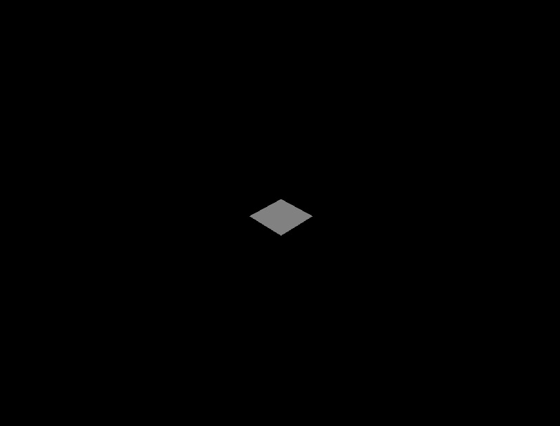
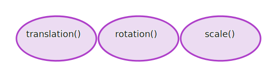

First, run this command in your terminal
ambient new my-projectThis will create a directory called my-project, which is where your new Ambient project lives.
Now run:
cd my-projectand
ambient runAfter the build finishes, you should see a window with a plane in the center of the screen.
Congrats! You've compiled your first Ambient project!
Now let's dig into the code and see what's happening under the hood. In the src directory of your project are two files, server.rs and client.rs. Go ahead and open up server.rs in your favorite editor :)
Let's take a look at this portion of the code.
Entity::new()
.with_merge(make_transformable())
.with_default(quad())
.spawn();
The Entity::new() function creates a new empty entity.
The make_transformable() function creates an entity that has 3 components:

These components get merged into the empty entity using the with_merge() method. Later on, we will change the values of these components for player movement.
The quad() component gets attached to the entity using
the with_default method, which sets the quad to the default size, color, etc.